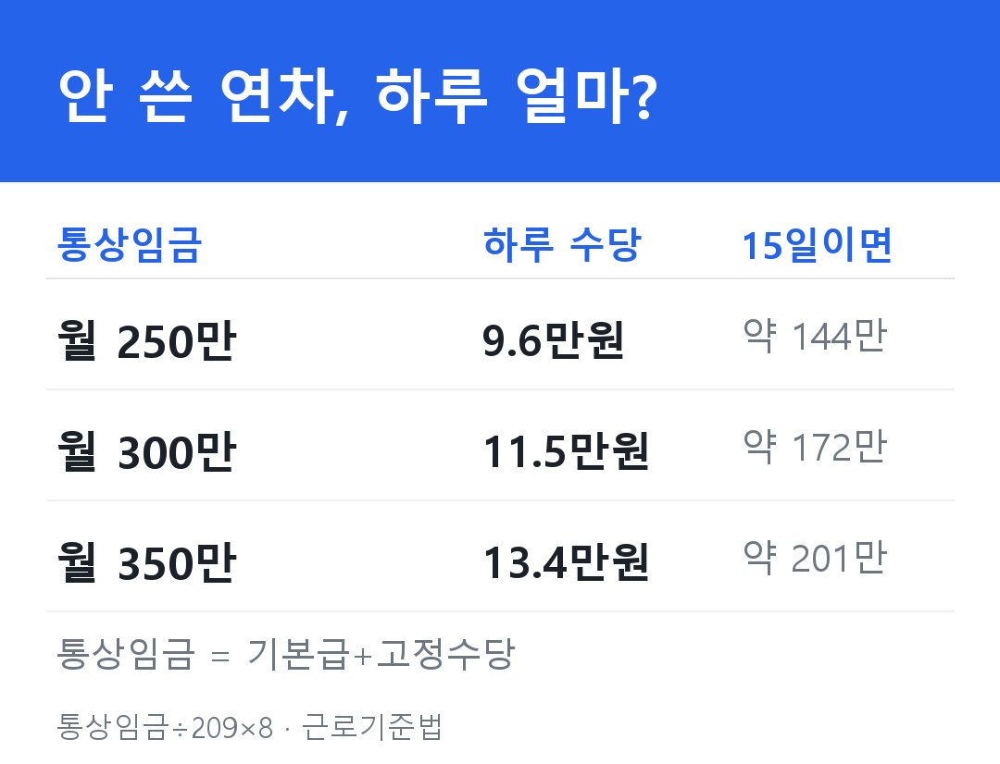
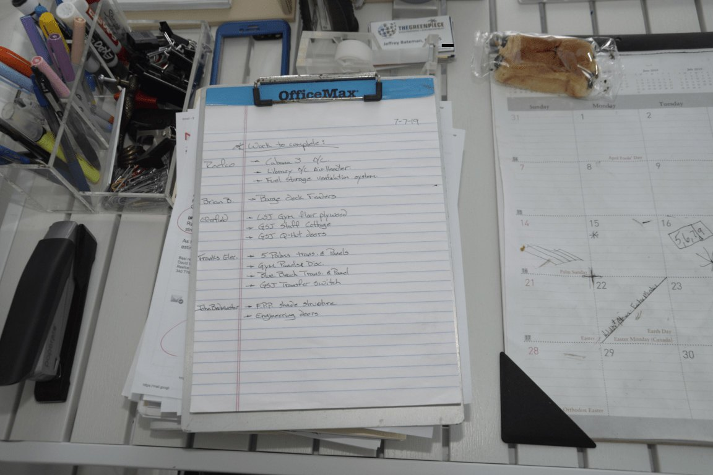

연차수당, 월급 300이면 하루 11만원인데.. 날리는 사람 특징
연차 하루를 안 쓰고 넘기면, 그게 얼마짜린지 아세요?
월급(통상임금 기준)이 300만원이면 하루치 연차수당이 약 11만원이에요. 통상임금을 209시간으로 나눠 8시간을 곱한 값이라, 정확히는 11만 5천원쯤 되고요. 15일 남았으면 170만원이 넘어요.
안 쓰면 그냥 사라지는 돈인데, 의외로 그대로 날리는 사람이 많습니다.

근데 여기서 갈려요. 안 쓴 연차가 무조건 사라지는 건 아니거든요. 날리는 사람한테는 공통점이 있어요.
1. "소멸되면 그냥 끝"이라고 믿는다
연차는 1년 지나면 소멸돼요. 근데 회사가 "연차 쓰라"고 법대로 안 알렸으면, 소멸 안 되고 돈으로 줘야 합니다. 이걸 모르고 포기하는 게 1번이에요.
2. 회사가 보낸 '연차 쓰세요' 통보를 무시했다
반대 경우예요. 회사가 법대로 두 번(만료 6개월 전·2개월 전) 서면으로 "남은 연차 쓰라"고 알렸는데 안 썼다면, 이건 소멸이 정당해서 수당이 안 나와요. 통보가 왔으면 그냥 쓰는 게 이득입니다.
3. 퇴사하면서 남은 연차를 안 챙긴다
퇴직할 때 안 쓴 연차는 촉진이고 뭐고 없이 무조건 수당으로 정산받아야 해요. 그냥 인사하고 나오면 본인 돈 두고 나오는 거예요.

4. 통상임금을 기본급만으로 계산한다
통상임금엔 기본급뿐 아니라 매달 고정으로 나오는 직책수당·기술수당도 들어가요. 기본급만 넣고 계산하면 받을 돈을 본인이 깎는 셈이에요.
5. 못 받아도 그냥 넘어간다
회사가 줄 의무가 있는데 안 주면, 고용노동부에 진정 넣을 수 있어요. 임금이라 떼이면 받아낼 수 있는 돈이에요.
그래서 핵심은 딱 하나예요.
회사가 "연차 쓰라"고 법대로 알렸는지. 안 알렸으면 안 쓴 연차는 돈으로 받습니다. 퇴사할 땐 그것도 따질 것 없이 무조건 정산이고요.
11만원짜리 하루를, 몰라서 날리진 마세요.